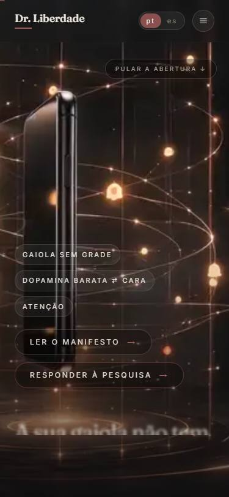
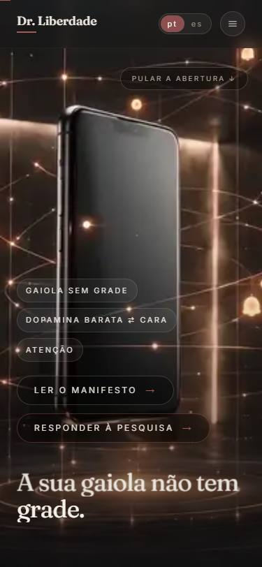
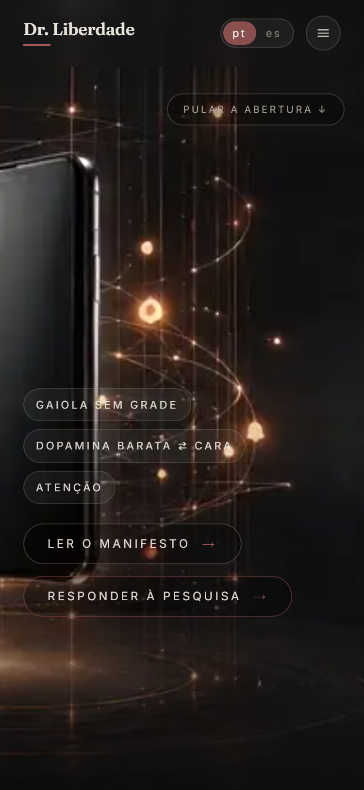

O QUE EU FIZ
- Filmei a página provisória rolando, no tamanho exato de um celular (18 segundos, sem nenhuma edição).
- As frases entram por baixo, atrás de uma linha invisível, desfocadas → nítidas, e saem por cima — presas ao seu dedo: rolou, andam; voltou, desandam. Exatamente a especificação que você ditou.
- E descobri por que você não as percebeu no seu aparelho — está no fim da página.
A página de hoje, rolando devagar do início até a 3ª frase. Repare no rodapé: "A sua gaiola não tem grade." sobe linha a linha, fica plena, e sai desfocando por cima quando a história avança.

Frase no MEIO da subida — metade ainda escondida atrás da linha invisível.

A mesma frase indo embora por cima, desfocando.
POR QUE VOCÊ NÃO VIU NO SEU CELULAR
O efeito existe, mas no celular ele está mal apresentado — a culpa é da composição que eu montei, não do seu aparelho:
- Os 3 chips ("gaiola sem grade", "dopamina barata", "atenção") e os 2 botões do topo antigo ficam parados no centro da tela durante todo o comecinho da história — só saem de cena depois da 1ª frase. Numa tela pequena, eles roubam o palco.
- As frases animadas vivem só numa faixinha no rodapé — no celular sobra pouco espaço para elas brilharem.

A tela como ela abre no celular hoje: os 5 elementos parados dominam; a frase animada nasce apertada lá embaixo.
A ÚNICA DECISÃO AGORA: posso consertar a apresentação no celular? Os chips e botões sairiam de cena logo no primeiro movimento de rolagem (ou entrariam na coreografia), e as frases ganhariam o palco — maiores e mais altas na tela. Custo: zero (é só código, nenhuma imagem nova). Responda "pode" ou "não pode".
O QUE AINDA ESTÁ COMIGO (sem mexer até você mandar)
- A animação da sinapse feita por código sobre a SUA imagem (pontos percorrendo os fios de verdade) — custo zero, aguardando sua palavra.
- Religar o cadeado das prévias do Vercel quando você aprovar o conjunto.